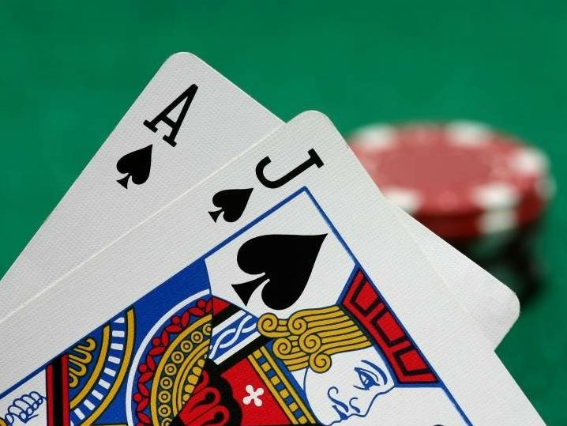

<template>
  <div class="MainContainer">
    <div class="TitleImg center">
      
    </div>
    <div class="single-wide">
      <h1>Where to Play Blackjack on Fremont </h1>
      
      <p><b>El Cortez offers the best blackjack game in downtown Las Vegas.</b> It is a single deck that pays 3:2 on a blackjack. Players can double down on any two cards and the dealer hits soft 17. The minimum bet is usually $5. Be careful in this game as the pit bosses have been known to sweat large action or bet spreads. </p>
      <p><b>Downtown Grand offers the best shoe games downtown.</b> For a $5 minimum, players can double down after splitting, re-split aces and surrender.</p>
      <p><b>Plaza offers regular $5 blackjack that pays 3-2. </b>Players can double down on any two cards and after splitting. This game can also be found at Golden Gate during slow periods. </p>
      <h5>"The safest way to double your money is to fold it over once and put it in your pocket" </h5>
      <h6><i>Kin Hubbard (1868-1930) </i></h6>
    </div>
  </div>

</template>
